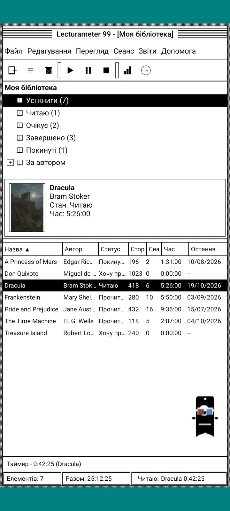
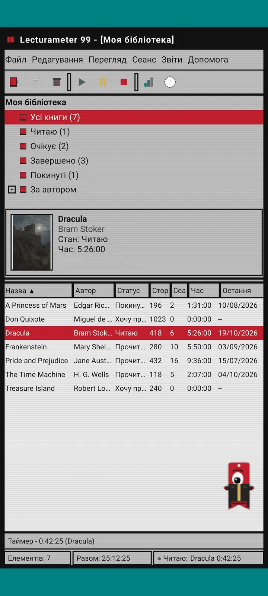
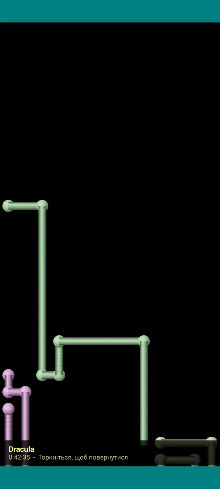

Lecturameter 1999
Lecturameter так, ніби ти встановив(ла) його з CD-ROM у 1999 році. Альтернативний клієнт застосунку з вікнами, меню й таблицями, який відкриває твої справжні резервні копії.

Що це
Настільна програма кінця дев’яностих на твоєму телефоні. Одне вікно на бірюзовому робочому столі, рядок меню, панель інструментів, дерево папок, щільна таблиця й рядок стану.
- Дерево бібліотеки: усі книги, читаю, очікують, завершені, покинуті та за авторами
- Таблиця з назвою, автором, статусом, сторінками, сесіями, часом і останнім читанням. Торкнись заголовка стовпця, щоб відсортувати
- Справжній пошук книг у тому самому каталозі, що й у Lecturameter
- Імпортує й експортує резервну копію Lecturameter та CSV Goodreads. Твої дані переходять туди й назад без втрат

Навіщо він існує
Експеримент: перебудувати ідею Lecturameter з нуля на радикально інших дизайнерських засадах, не чіпаючи справжній застосунок. З усіх переосмислень версія 1999 сподобалася мені найбільше, тож я довів її до кінця як веселу вправу й зробив повноцінним клієнтом. Вона навмисно простіша за Lecturameter: це експеримент, і в принципі її більше не розвиватимуть.
- Таймер у плаваючому вікні із зеленим LCD-дисплеєм. Його можна переміщати, згортати на панель завдань, і він продовжує рахувати в рядку стану
- Коли зупиняєш таймер, діалог збереження сесії запитує сторінки й розраховує твій темп, як і в Lecturameter
- Збережені сесії — це сесії Lecturameter: вони повертаються в сучасний застосунок, якщо експортувати резервну копію Lecturameter 1999 і імпортувати її в Lecturameter.

Звіт про читання
Статистика — це друкований звіт: підсумок, час на кожну книгу зі стовпчиками з блоків, швидкість у сторінках на день, календар року, намальований символами, та останні сім днів.

Історія сесій
Сесії, згруповані за книгами в дереві з плюсами й мінусами, з п’ятьма показниками вгорі: сесії, загальний час, сторінки, сторінок на хвилину та сторінок на день.

Зберегти сесію
Дата, хвилини, перша й остання сторінка, коментар. Підсумок розраховує сторінки й темп, поки ти вводиш дані. Якщо доходиш до останньої сторінки, запитає, чи завершив(ла) ти книгу.

Pagi 99
Pagi теж подорожує в 1999 рік: піксельний і вільний на екрані, як офісні помічники того часу. Його можна перетягувати, на дотик він каже репліку, а підказки показує в жовтих хмаринках.
Теми
Classic 98 безкоштовна й діє за замовчуванням. Пакет додає ще шість, кожна зі своїм фоном і звуками.

Обери її в меню «Вигляд»
«Вигляд, Тема...» відкриває вікно із сімома темами. Зміна одразу діє на всі вікна, таймер і Pagi.
- Classic 98, безкоштовна й за замовчуванням: сірі вікна, темно-сині заголовки й бірюзовий робочий стіл
- Пакет тем: 1984, Gumdrop, Memory, Towers, Core та 8-bit
- Кожна тема має власний фон робочого столу й власні звуки для дотиків, вікон і таймера
- «Вигляд, Звуки теми» вимикає звуки, якщо ти читаєш у тиші

Classic 98
Сірі вікна, темно-сині заголовки й бірюзовий робочий стіл. Безкоштовна, саме з нею застосунок відкривається.

1984
Однобітний чорно-білий робочий стіл із візерунками з крапок і квадратними вікнами.

Gumdrop
Напівпрозорий кольоровий пластик, круглі кнопки й смужки на тлі.

Memory
Меню дискової консолі дев’яностих у темно-синіх тонах.

Towers
Ще одна дискова консоль дев’яностих: нічний синій колір із блакитними лініями.

Core
Чорно-зелена консоль, як екран, що ніколи не вимикається.

8-bit
Великі пікселі, мало кольорів і блокові літери.

Спробуй перед покупкою
Торкнись заблокованої теми, і весь застосунок перетвориться на неї. Якщо закриєш без покупки, повернеться попередня тема.
Скринсейвери
З’являються лише тоді, коли таймер працює, а ти не торкаєшся телефона. Чекають 1, 3 або 5 хвилин, або не вмикаються ніколи. Один дотик повертає тебе назад, а таймер продовжує рахувати.

Літаючі книги
Піксельні книги, що махають обкладинками по чорному екрану.

Поле літер
Літери з багатьох абеток пропливають повз, як зоряне небо.

Труби зі сторінок
Труби зі сторінок, які самі малюються, доки не заповнять екран.

Pagi, що відскакує
Pagi відскакує від країв екрана.

Годинник читання
Час сесії великими LCD-цифрами.

Костюми для Pagi
Вісім костюмів для Pagi 99. Обираєш їх у «Вигляд, Костюм Pagi...» і можеш приміряти перед покупкою.
- Касетний плеєр
- Кепка козирком назад
- 3D-окуляри
- Неонові сонцезахисні окуляри
- Дискета в руці
- Шкіряна куртка
- Кишеньковий улюбленець
- Картонна корона
Магазин
Застосунок безкоштовний і повний для запису читання. Те, що можна купити, змінює лише зовнішній вигляд.
Увесь застосунок, без обмежень за часом.
- Бібліотека, пошук, таймер і сесії
- Звіт про читання та історія сесій
- Резервна копія Lecturameter і CSV Goodreads, імпорт та експорт
- Тема Classic 98 та Pagi 99
- Без облікового запису й без реклами
Одноразові платежі, без підписок.
- Пакет тем, €3.49: 6 тем із фоном і звуками, плюс скринсейвери
- Скринсейвери, €1.99: усі 5 скринсейверів
- Костюми Pagi, €1.99: усі 8 костюмів
- Весь 1999, €4.49: теми, скринсейвери й костюми
Необов’язкові чайові в меню «Допомога», якщо хочеш пригостити мене кавою.
Теми й костюми можна приміряти наживо перед покупкою. Якщо закриєш без покупки, повернеться те, що було.
Що змінюється порівняно з Lecturameter
Те саме, що в Lecturameter
- Ті самі дані: книги, сесії, статуси, оцінки й нотатки. Файл резервної копії однаковий в обох застосунках.
- Пошук книг за назвою або автором.
- Справжній таймер: рахує у фоновому режимі й навіть коли ти закриваєш застосунок.
- Без облікового запису, без реклами, без з’єднання, окрім пошуку книг.
- Ті самі мови, що й у Lecturameter.
Тільки у виданні 1999
- Настільний інтерфейс 1999 року. Без Material.
- Справжні вікна: їх можна перетягувати, згортати й закривати хрестиком.
- Звіт про читання текстом, із календарем, намальованим символами.
- Контекстне меню за довгим натисканням і комбінації клавіш, якщо підключити клавіатуру.
- Піксельний Pagi 99 із хмаринками-підказками.
- Необов’язкові теми з власним фоном і звуками, скринсейвери під час роботи таймера та костюми для Pagi.
Чого в ньому немає, і це навмисно
- Без Pro і без підписки. Вести облік читання можна безкоштовно, магазин продає лише зовнішній вигляд.
- Без викликів, Bingo, річного Wrapped і віджетів.
- Без сесії із зануренням, фонових звуків і резервного копіювання на Google Диск. Резервна копія зберігається як файл.
Закрите тестування
Lecturameter 1999 проходить закрите тестування в Google Play. iOS з’явиться пізніше, дати поки немає.
- Приєднайся до групи groups.google.com/g/lecturameter-1999
- Зареєструйся як тестувальник на play.google.com/apps/testing/com.lecturameter.r1999
- Встанови його з Google Play
Закрите тестування в Google Play, iOS пізніше. Прочитай допис у блозі , щоб дізнатися, звідки він узявся й чого чекати.